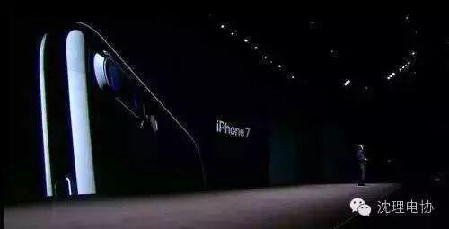
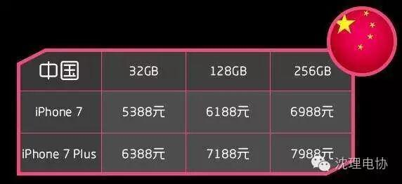
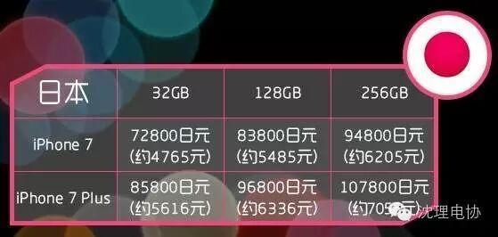
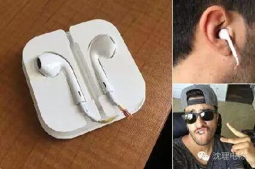
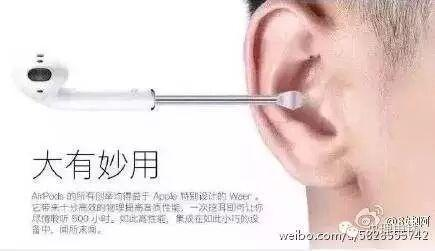
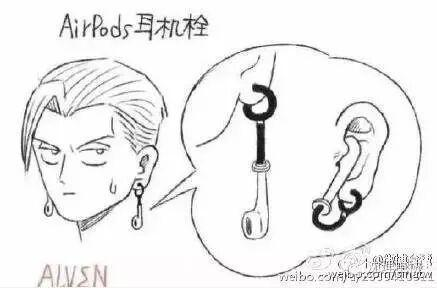
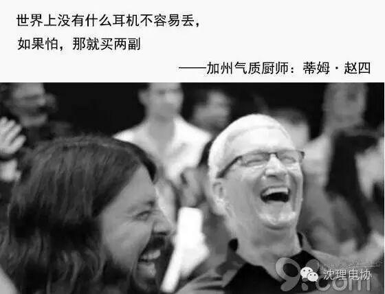
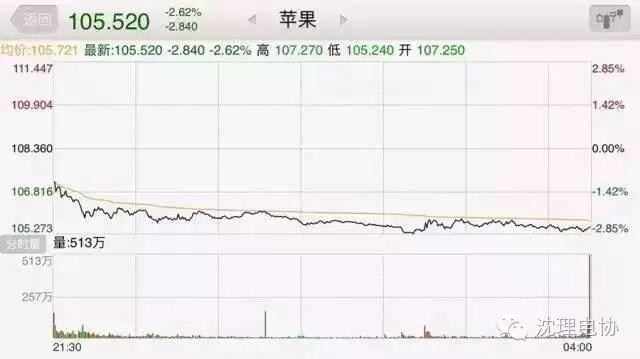
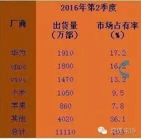

使用小程序
9月8日，一年一度的果粉“狂欢节”如期而至。
苹果发布了新一代智能手机iPhone 7 和iPhone 7 Plus，这款手机被库克认为是迄今为止最好的iPhone。9月9日开始预定，9月16日开售，果粉们又要开始“卖肾”了。

iPhone7拥有十大新功能：包括新的黑抛光色；新的HOME键；完全防水防尘；摄像头功能提升，PLUS机型拥有双镜头；视网膜高清显示屏；立体声扬声器；有线耳机可以连接到Lightning转接器上；无线耳机AirPods；Apple Pay更强大的功能；A10处理器提升续航。
售价美国最便宜，日本也比中国便宜


售价方面，美国最便宜，最低配置是4322人民币，中国是5388人民币，日本竟然才买4765人民币，竟然比中国便宜了足足600多，小编表示很愤慨，凭什么！难怪我天朝代购生意做的风生水起。
史上最好iPhone，却被网友吐槽
史上最好iPhone，却被网友批毫无亮点，创新不足，十大新功能也没什么特别之处，来说说最亮眼的两大功能，一个是防水，一个是AirPods耳机。
这次iPhone新品终于加上了防水功能，手机掉进水里，基本都废了，不过防水功能已经不是什么新奇的创新科技。
所以，库克也是低调，要是董明珠在上面讲的话，肯定第一时间在现场拖过来一个装满水的马桶，当场表演手机向后翻腾2周半转体1周半跳水。
而且再轻描淡写地来一句“我这样掉马桶不会坏，你们敢吗”
嗯，我们不是不敢，而是身体太大掉不进去。

这次最劲爆的无疑就是苹果的“杀手级耳机”AirPods。据说这款耳机有三大用处：
1、发廊标配，先吹个头发！
2、吹完头发，再掏个耳朵！

3、掏完耳朵，直接带上做耳环！

这创新科技，好劲道！好犀利！然而网友们立即啪啪打脸：
“价格昂贵、极易丢失、续航能力差。”
这款AirPods耳机售价高达1288元，不配送，独立销售，意思要额外花钱买，看来卖完肾，还得加卖点其他的才行。

还有这风筒耳机，由于没有线，极易丢失，网友们称这是“本年度丢失率最高的物品”，不用买只用捡。
至于续航能力，人们想要全天24小时续航，那么必须随身带着充电盒。
市场不买账，股价下跌蒸发上千亿财富
产品最终好不好，得市场说了算，得消费者说了算，然而，才刚开完发布会，市场就投了否定票，苹果股价就一头栽了下去。

昨晚美股早盘，苹果便跌超2%。而截至今日凌晨（9日）收盘，股价更是下跌2.84美元，跌幅达2.62%。以苹果总股本53.9亿股计算，153亿美元（约合1022亿人民币）就此蒸发！
而苹果的业绩也不甚理想，在苹果公布的第三财季财报中，苹果在大中华区(涵盖了中国大陆、中国香港以及台湾地区)的营收为88.48亿美元，同比去年大幅下滑了33%。尤为值得注意的是，相比苹果公司整体营收15%的下滑幅度，大中华区已经“遥遥领先”。
颓势已显，中国市场领苹果最担忧
在被戏称为“人傻钱多”的中国市场上，苹果一直是个傲慢的手机制造商。当国产品牌们都在想尽办法“讨好”用户时，苹果却习惯性地摆出一副“爱买不买”的臭脸，因为其一点都不发愁卖不出去，中国市场上多的是彻夜排队只为首批买到iPhone的人。
然而，三十年河东，三十年河西，这一形势已经在慢慢的改变，苹果在中国市场慢慢下滑，出现明显的发展颓势。对于苹果而言，中国市场的下滑真正让其感到“痛”了。

中国智能手机市场第二季度增长了4.6%，但是苹果第二季度在这个地区的销量锐减了31.7%，由去年同期的1260万部降到了860万部。市场份额从一年前的9.2%降至6.7%，排名跌至第五位，落后于华为、Oppo、Vivo和小米。
如今，苹果在中国的发展颓势已经不可避免，即使是iPhone7的到来也无法挽救。苹果现在缺乏的不是产品，而是持续的创新能力。之前是国产手机都以模仿苹果为榜样，现在据说苹果都要借鉴国产手机。
世上已无乔布斯，库克的考验来了，苹果的大考验来了，苹果这艘巨无霸能否继续安稳前行，就看库克能否战胜来自全球的竞争对手。
所以，iPhone7真来了，你会购买吗？